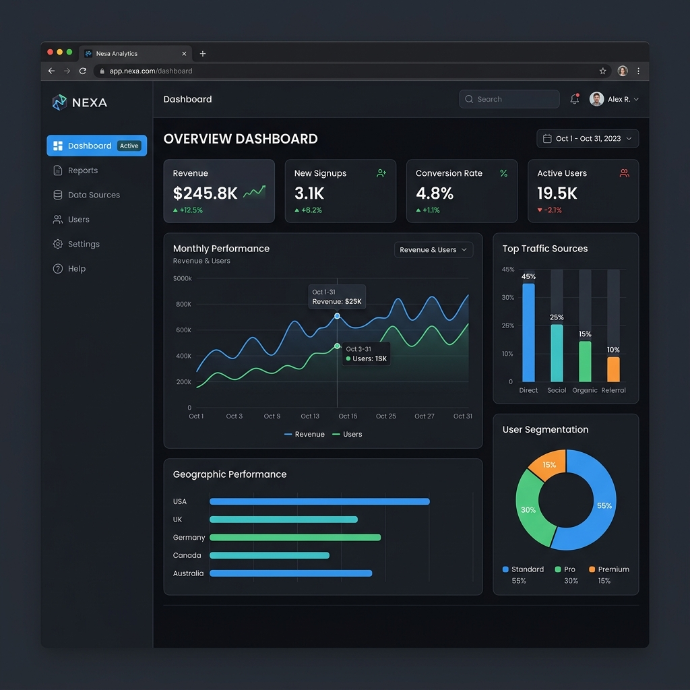
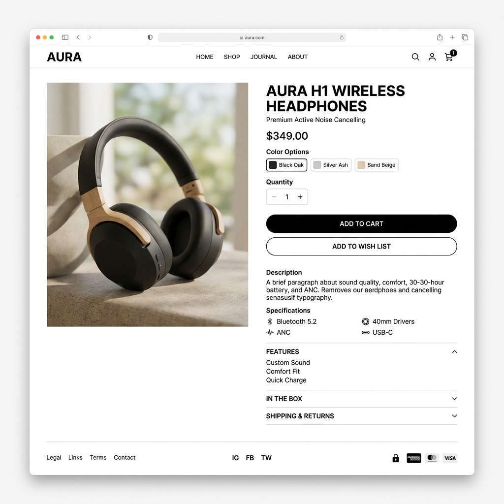
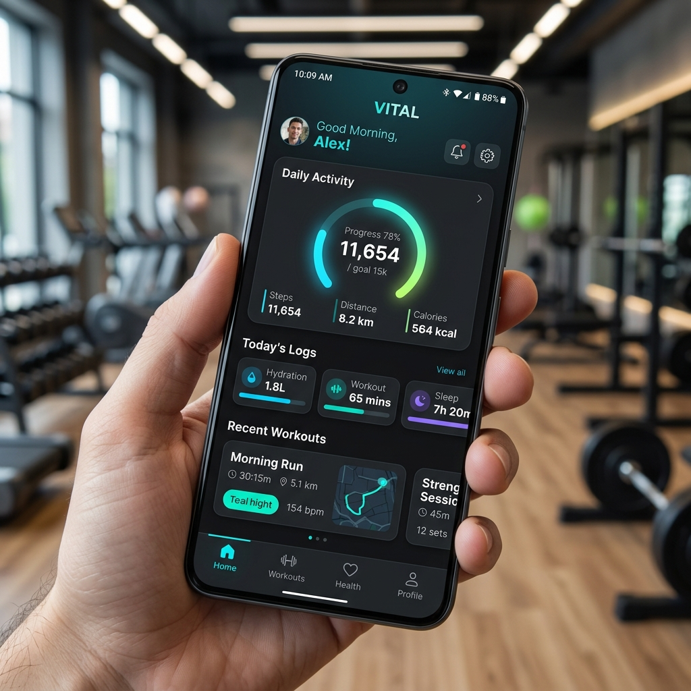
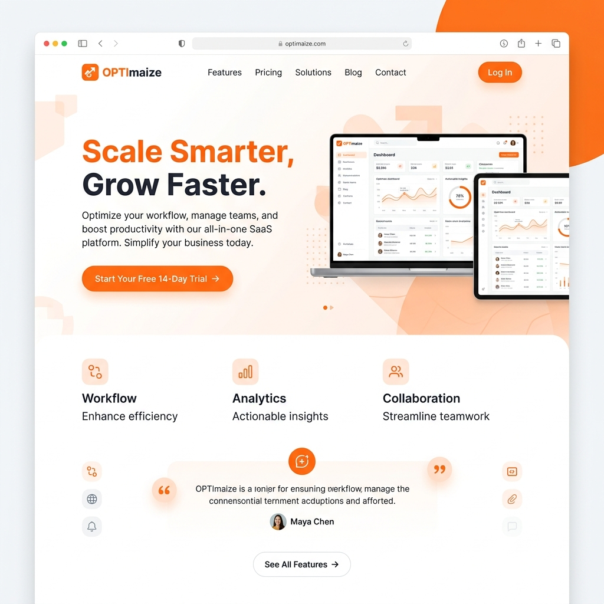
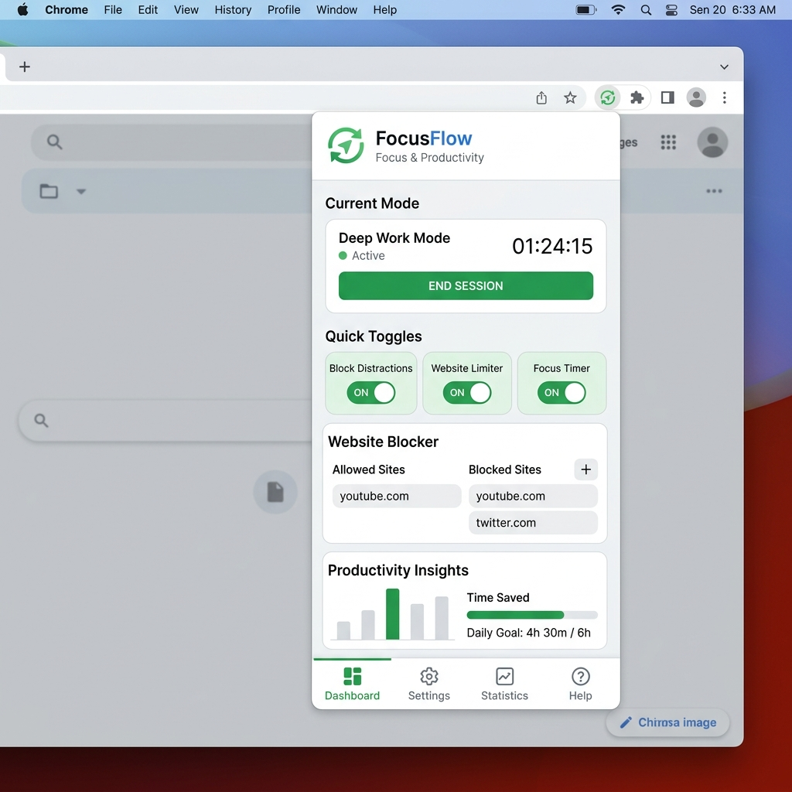
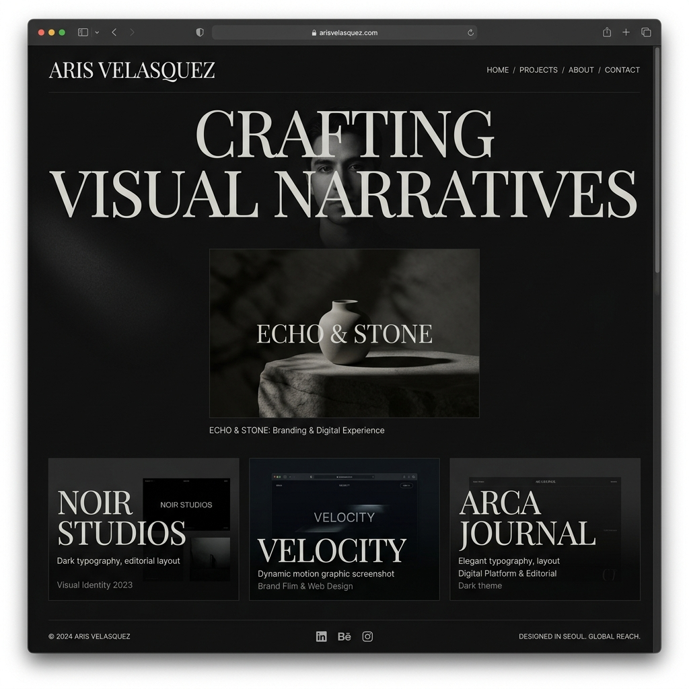

Hey, It's Alex Morgan.
UI/UX & Product Designer
Based on New York, USA.
Scroll Down
Biography
Creative and detail-oriented UI/UX designer with over 6 years of experience crafting intuitive digital products. Passionate about creating seamless user experiences that bridge the gap between business objectives and user needs. Specialized in design systems, prototyping, and user research.
My Services
- User Experience Design
- User Interface Design
- Usability Testing
My Location
New York, USA
Brooklyn
Experience
Projects
Clients
Received
My Clients All Over The World
My work process
Every great product starts with a clear process. Here's how I turn your ideas into polished, user-centered digital experiences — from discovery to delivery.
Introduction
Understanding your vision, goals, and target audience through in-depth consultation and research to lay a strong foundation.
UX Design
Creating wireframes, user flows, and information architecture that ensure an intuitive and seamless user experience.
UI Design
Crafting pixel-perfect visual designs with attention to typography, color theory, and modern design trends that captivate users.
Delivery
Handing off polished design files with detailed specifications, developer documentation, and ongoing support for implementation.
Recent case study
A selection of recent projects showcasing my approach to solving complex design challenges through research-driven, user-centered solutions.






My Services
Comprehensive design services tailored to elevate your digital presence. From concept to completion, I deliver solutions that resonate with your audience.
Product Design
End-to-end product design from ideation to launch. I create cohesive design systems, interactive prototypes, and production-ready assets that align with your brand identity.
Read moreUser Experience Design
Research-driven UX solutions including user journeys, wireframes, and usability testing. I ensure every interaction feels natural, efficient, and delightful for your users.
Read moreUser Interface Design
Pixel-perfect, visually stunning interfaces that follow modern design principles. I craft clean layouts with thoughtful typography, color, and micro-interactions.
Read moreMy Client Feedback
Don't just take my word for it — hear what my clients have to say about working together on their digital products.